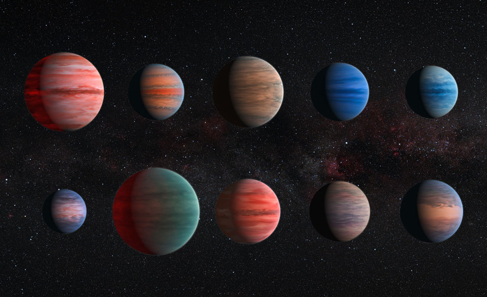

Planetas del Sistema Solar
- Mercurio
- Venus
- Tierra
- Marte
- Júpiter
- Saturno
- Urano
- Neptuno
Características principales
Planetas rocosos
Son más pequeños y están formados mayoritariamente por roca y metal. Ejemplos: Mercurio, Venus, Tierra y Marte.
Planetas gigantes
Son de gran tamaño y composición gaseosa o de hielos. Ejemplos: Júpiter, Saturno, Urano y Neptuno.
Cuerpos menores
Asteroides, cometas y satélites naturales que también forman parte de nuestro sistema.
